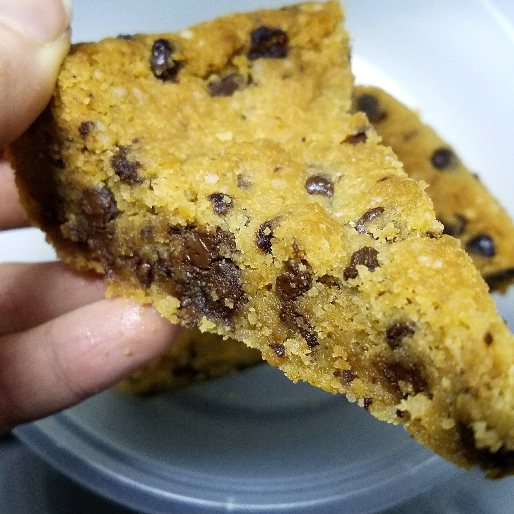
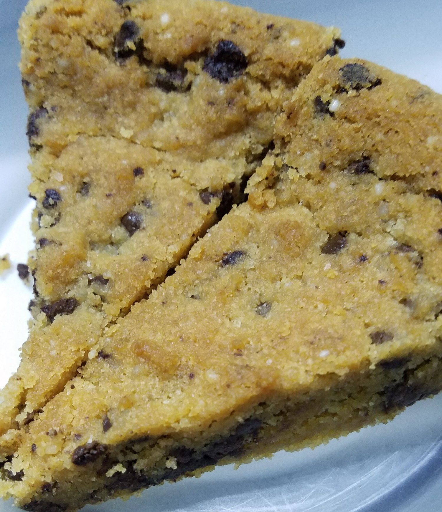

Vegan Chocolate Chip Skillet Cookie



Want to know a secret about healthy eating? It's not all about healthy eating. Exhibit A: Vegan chocolate chip skillet cookie. It's taken me a while to find a healthy balance of loving my healthy food while enjoying in indulgent treats without feeling guilt or totally swinging one way or the other, but I can confidently say that I have reached a great place. I used to feel like if I eat healthy, that's what I have to be known for. But nah. You can have both. It's best to have both :) So 1-2 times a week I consistently go out to eat with Nick or friends and once a week I cook or bake something less about "whole foods" and more about having fun and enjoying new things. The other meals? Fruit, veg, tofu, soy, almond butter, and the usual health food staples that I love so much.
I hope that everyone can reach this place at some point. I know it's so so hard. Overthinking overanalyzing making things more complicated than they need to be. I also hope that I can maintain this healthy mindset and not revert back to the all or nothing ways. It feels so great and free right now and I never want it to go away.
Needless to say, this recipe is not "healthy" "sugar free" "gluten free" etc etc (although it probably could be gluten free if you use gluten free flour). It's just a fun, DELICIOUS treat that I wanted to try. I had my slice (or two :p) and shared with Nick (he gets first dibs, forever) and coworkers.
Normally when I bring treats into work, they last until around noon. This was gone by 9 am! I was surprised and very happy. People absolutely loved this and I will be making more for sure. Especially since not everyone saw it out before it was gone! And those that tried it didn't realize it was vegan until they knew it was me that brought it (cue evil genius music).
Nick has three different cast iron skillets and I feel like that really made this recipe great. I have never used a cast iron, but now I am sold on them. I'm so excited to cook meals upon meals upon meals and force feed people. Muahaha. I don't know why I've always loved the cooking part more than the enjoying? My life is a constant struggle of not having enough mouths to feed. Does anyone else ever feel this way?
Anyways, try this vegan chocolate chip skillet cookie recipe out if you want to make friends. You'll be drowning in love in minutes. Promise.
Vegan Chocolate Chip Skillet Cookie
Makes: 16 slices
-
1.25 cups all-purpose flour
-
1.5 tsp egg replacer powder(optional)
-
1/4 tsp baking powder
-
1/2 tsp baking soda
-
1/2 tsp sea salt
-
2/3 cup vegan butter
-
1/2 cup white sugar
-
1/2 cup packed brown sugar
-
1 tsp vanilla extract
-
1.5 cups vegan chocolate chips
-
Preheat the oven to 350 F. Lightly grease a 10" cast iron skillet with vegan butter spread.
-
In a small bowl, stir together the flour, egg replacer, baking powder, baking soda, and salt. Set to the side.
-
In a large bowl, use a hand blender to cream together the vegan butter, white sugar, and brown sugar until whipped and fluffy. Add the vanilla and mix again.
-
Add the dry ingredients to the wet ingredients and blend on medium speed until evenly combined. Fold in the chocolate chips with a spoon.
-
Spoon the batter into the cast iron skillet and flatten it out evenly to every edge with the back of the spoon.
-
Bake at 350 degrees for 30-32 minutes until lightly browned on top. For a crisped, browned top, set the oven to broil for another 1-2 minutes at the end.
-
Let cool for 15 minutes, slice, and serve!!